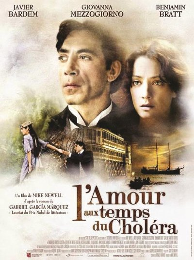

我推荐的书

百年孤独
《百年孤独》：绚烂的生命也曾孤独
——孤独是爱的底色
一个由于喝奶茶而失眠的夜晚，我终于看完这本《百年孤独》，并写下些许文字。
这本书讲述了布恩迪亚家族从创立到灭亡、七代人一百年的经历。
很多人被书中冗长而高度重复的名字劝退，仔细读书其实不难区分。乌尔苏拉代表乐观坚毅，蕾梅黛丝代表美好善良，阿尔卡蒂奥代表情欲物欲，奥雷里亚诺代表理性思索。叫相似名字的人有相似的性格，一代一代周而复始。这个为了躲避因近亲结婚生出猪尾巴孩子而创立马孔多小镇的家族终因生出猪尾巴的孩子而灭亡，羊皮卷上的预言直到命运上演才被译出。宿命早已写好，命运罗盘转动，人们陷入轮回而不自知。
霍乱时期的爱情
🍂这场幻影长达半个多世纪，阿里萨说过:“死亡让我感到唯一的痛苦，便是不能为爱而死。”他心中始终有股执念，那就是对费尔明娜的爱，永远是他人生中唯一的指引。
现实中他和费尔明娜真正交流只有过两次，一次开始，一次结束。中间大量的时间，都是以那诗般的手笔，来传达自己的思念之情。
他所有的思念，虚幻出了“花冠女神”。这些都是在大脑中虚幻出来的，他浓郁地爱着那个幻影，那个幻影让费尔米娜在他心中不容有丝毫的瑕疵。
然而滑稽的是，两年后，偶然间的相遇。一声:“花冠女神”，让费尔明娜惊慌失措的看着眼前瘦小苍白的少年，坠入到失望的深渊，恼火自己爱的人，只不过是脑海中的幻影。当天，她就写了一封绝交信，只有两行：今天，见到你时，我发现我们之间不过是一场幻觉。
在那短短的一瞬间，她竟明白爱的只是脑海中的幻影，而不是眼前这个少年。但阿里萨迟迟却不明白。